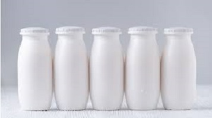
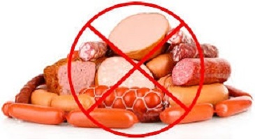
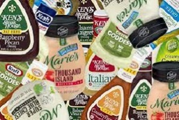
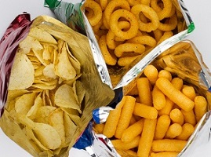
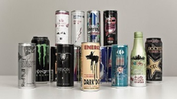
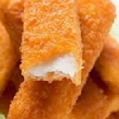
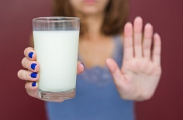

1. Joghurt, joghurtitalok
A legtöbb joghurt és joghurtital köszönőviszonyban sincs a gyümölcsökkel, rostokkal és vitaminokkal. Valódi gyümölcstartalmuk igen csekély, szinte elhanyagolható, viszont annál több mesterséges adalékanyagot tartalmaznak. Találhatunk bennük nagy számmal édesítőszereket, aromákat, ízfokozókat. Készítsünk inkább saját magunknak gyümölcsjoghurtokat natúr joghurt és friss gyümölcsök felhasználásával. |
 |
2. Feldolgozott húsárú
|  | A feldolgozott húsárú nagyon gyakori eleme a táplálkozásunknak. A probléma ezekkel a kolbászokkal, felvágottakkal, virslikkel és társaikkal, hogy cukrot tartalmaznak (ha nem hiszed, nézd meg összetevőik listáját), a szívinfarktus és a cukorbetegség kockázatát növelik. Másrészt, fogalmad sincs, mit tartalmaznak pontosan, és attól tartok, ha tudnád, soha többé nem ennél belőlük. |
3. Salátaöntet
| Bár nem nyilvánvaló a legtöbbek számára, mégis egészségtelen. Olcsó, feldolgozott olajokat használnak a készítéséhez, mint például szója, kukorica vagy repceolaj. Ezek gazdagok omega - 6 zsírsavakban, melyek a szervezetben gyulladásos folyamatokat indítanak be. Másrészt tele vannak sóval, tartósítószerrel, cukorral, egyszóval felejtsd el őket. Érdemes elkészítened a saját verziódat helyette. |
 |
4. Chips
|  | A krumplival karöltve a súlygyarapodás egyik fő okozója a chips, tanulmányok szerint. Talán itt az ideje, hogy ezzel az értéktelen kajával is felhagyj, helyette, ha nassolni támad kedved, válassz magvakat, zöldségeket vagy humuszt. |
5. Energia ital
Az energiaitalok cukrosak, itatják magukat és tele vannak koffeinnel. Rendszeres fogyasztása ártalmas lehet a szívnek, emeli a vérnyomást és elhízáshoz vezethet. |
 |
6. Gabonapehely
 |
A tökéletes reggeli, ami kellő energiát ad egész napra. Az igaz, hogy gazdag rostokban és vitaminokban, tehát hozzájárul az emésztés javításához, ám nem annyira egészséges étel, mint amilyennek kikiáltották. A natúr változatokkal még nincs gond, de a különböző ízesített fajták, mint a csokis vagy mézes, extra mennyiségű cukrot és mesterséges adalékanyagokat tartalmaznak. |
7. Panírozott halrudacska
Ugyan a hal rendkívül egészséges táplálék, de nem mindegy, hogy milyen formában kerül a tányérunkra. Az az ideális, amelyik fontos ásványi anyagokat, vitaminokat és omega-3-zsírsavat tartalmaz. A halrudacska nem tartozik ide. Rengeteg mesterséges anyagot tartalmaz, a bő olajtartalmáról nem is beszélve. |
 |
8. Tej
|  | A tej élet-erő-egészség, tartja a mondás. Számolj le ezzel a tévhittel, egyszer és mindenkorra, akármennyire is fáj a szívednek. A tehénnek el kellene apadjon a teje, miután a kisborjút táplálja, ergo te egy másik állat anyatejét fogyasztod. A tej vitamin- és ásványi anyag tartalma lényegesen eltér az ember számára ideálistól. A tej bomlástermékei versengenek a vassal a felszívódásért. Így a más táplálékokból származó felszívódása elégtelen lesz. A keletkezett vashiány fejfájást, idegességet, hajhullást, körömrepedezést eredményez. |